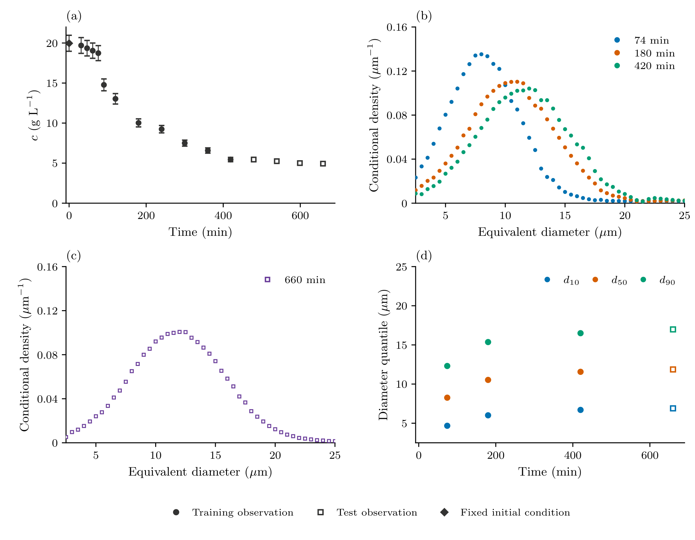
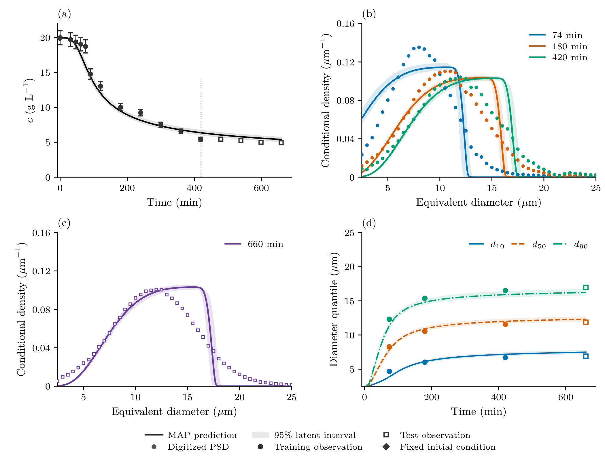
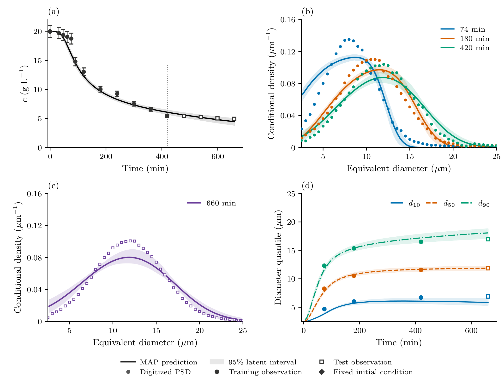
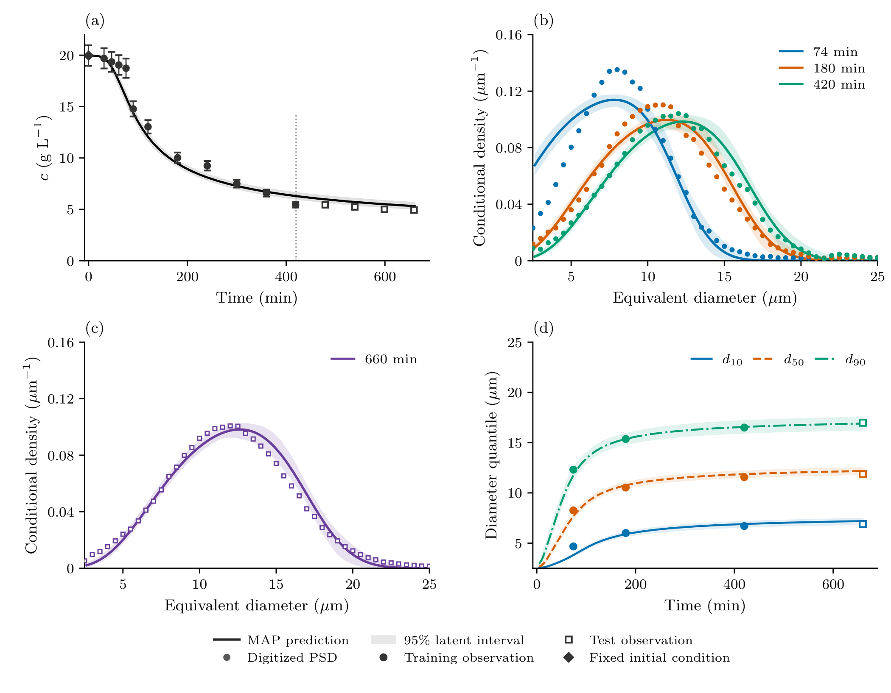
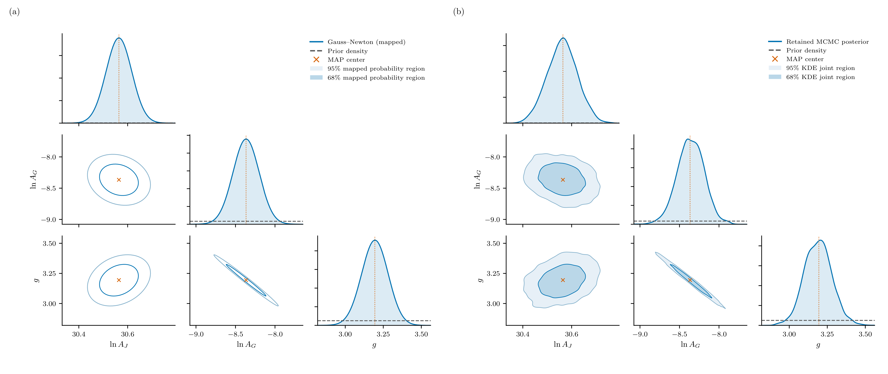
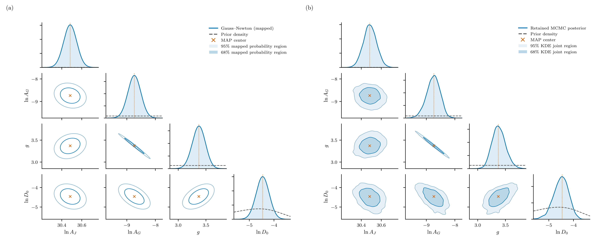
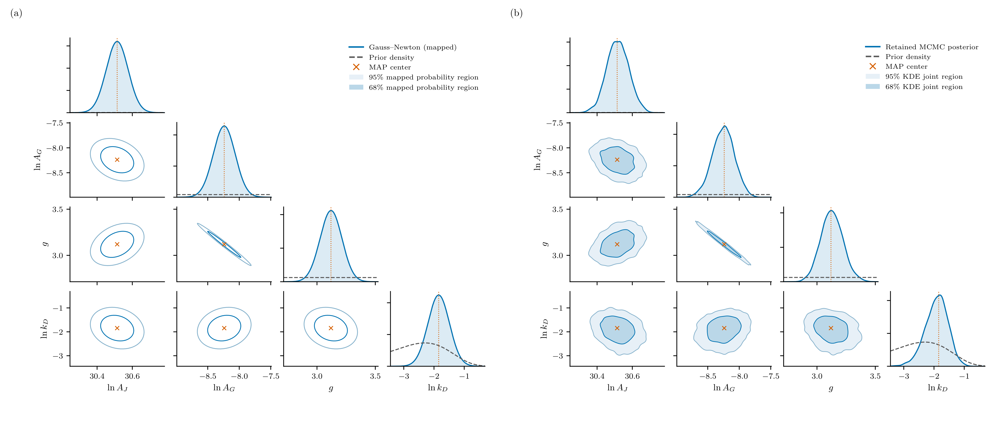

Protein crystallization: CNT and growth dispersion
Result conventions. The original CNT and constant-$D_0$ MCMC draws, MAP fits and latent bands retain their producer records. A separately recorded source review and posterior/gradient checks establish compatibility at the saved MAP and representative retained points before new Gauss–Newton calculations. The third scenario is a new calculation. Current local approximations use the declared inference-coordinate posterior, including physical-prior Jacobians once. Untagged original MAP records are not relabelled: local refinement from their saved coordinates supplies a checked, versioned center for the new uncertainty analysis.
Dissolved concentration measures how much protein has crystallized; a number size distribution measures how that material is divided among crystals. Here we use both to calibrate three descriptions of one isothermal lysozyme batch: CNT nucleation with a common mean growth rate, and two random-fluctuation growth-rate dispersion (GRD) closures: constant diffusivity and diffusivity proportional to mean growth. Later observations test their predictions. None is presented as a universal kinetic law.
System and measurements
The 100 mL batch at 20 °C is from Tang et al. (2018), Figures 11(d) and 12(a). The source records describe 0.1 M sodium acetate buffer at pH 4.5, with 40 g/L protein and 10% w/w NaCl stocks. The mixed-solution salt convention and the conflicting 100/210 rpm stirring descriptions remain unresolved; we do not infer a mixing history from them.
Concentrations were measured after 0.22 μm filtration and 50-fold dilution by UV absorbance at 280 nm. Sizes are microscopy/image-analysis equivalent diameters, and these are number distributions. The separate 1 L laser-diffraction volume measurements are not used. Our supplied curves are graph reconstructions, not raw crystal counts or independent 0.5 μm measurements. The data and provenance retain the original readings and unrounded graph-read times.

Panel (a) shows concentration; its diamond fixes $c(0)\simeq19.97$ g/L. The exact graph-derived input is retained in the data file, not rounded for solving. Filled circles are the eleven training observations; open squares are the four later test observations. Panels (b) and (c) show the three training distributions at 74, 180 and 420 min and the held-out distribution at 660 min. Each density integrates to one over 2.5–25 μm, the isothermal_core window. Panel (d) shows conditional number $d_{10},d_{50},d_{90}$ as scatter. These quantiles agree with the supplied CDFs and are not fitted again. The error bars in (a) are the assumed uncertainties below, not reported experimental standard deviations. No PSD or quantile error bars are invented.
The density readings retain the source figure's raster/marker irregularities. They are shown as scatter only, without smoothing or connecting guides. The supplied CDFs and likelihood are unchanged.
Three population models
The batch starts unseeded, $n(L,0)=0$. Let $n$ be number density per litre of suspension per micrometre, $L$ equivalent diameter in μm, $t$ time in minutes and $c$ dissolved concentration in g/L. All three models use the CNT nucleation and size-independent growth forms of Mitchell et al. (2023), Case 3:
\[S=\frac{c}{c_*},\qquad J(c)=A_J\exp\!\left[-\frac{B}{(\ln S)^2}\right],\qquad G(c)=A_G(S-1)^g,\]
\[B=\frac{16\pi\gamma_{\rm SI}^{3}\nu^2}{3(k_{\rm B}T)^3},\qquad \gamma_{\rm SI}=0.00064\ {\rm J\,m^{-2}}.\]
Set J and G to zero for S ≤ 1. There is no extra S prefactor in J. $A_J$ is in particles/(L min), $A_G$ in μm/min and $B$ is dimensionless. These are the same kinetic forms with consistent units, rather than the earlier mixture of seconds/minutes and nanometres/micrometres. In particular, $A_{J,{\rm new}}=0.06 A_{J,{\rm old}}$ and $A_{G,{\rm new}}=10^{-3}A_{G,{\rm old}}$. Unit conversions belong to the parameter definitions, not extra factors in these equations.
We fix interfacial energy at 0.64 mJ/m², the median of the preceding Mitchell-based LogNormal prior. This is a conditional modelling choice that removes the nucleation-prefactor/ barrier compensation direction, not evidence that interfacial energy has been measured precisely. Three parameters are inferred for CNT; four for CNT + GRD. The common kinetic priors are the previous priors expressed in the new units, except that g now has the explicitly wider Uniform(1,5) prior.
| Parameter | Meaning and units | Prior | Model |
|---|---|---|---|
| $\gamma$ | Effective interfacial energy (mJ/m²) | 0.64 (fixed) | All |
| $\ln A_J$ | Natural log of the numerical nucleation prefactor in particles/(L min) (dimensionless) | Uniform(-2.8134, 97.187) | All |
| $A_G$ | Mean-growth prefactor (μm/min) | log-uniform AG on [1e-05, 1.5] | All |
| $g$ | Supersaturation growth exponent (dimensionless) | Uniform(1, 5) | All |
| $D_0$ | Constant internal-coordinate diffusivity D0 (μm²/min) | Exponential(scale/mean 0.01 μm²/min) | Constant GRD |
| $k_D$ | Growth-dependent GRD coefficient in DG = kD G (μm) | Exponential(scale/mean 0.1 μm) | Growth-dependent GRD |
Model 2's constant $D_0$ has an Exponential prior with mean 0.01 μm²/min. This is a declared regularizing assumption: its mean would give diffusion-only standard-deviation growth $\sqrt{2D_0t}\approx3.6$ μm over 660 min on an unbounded coordinate. The numerical mean was chosen heuristically, not taken from Tang or Mitchell or estimated independently. It is not a measured coefficient or a converted prior on the old growth-dependent dispersion parameter. The two GRD laws are different models, so their parameters and posterior draws cannot be interchanged.
Model 3's $k_D$ has an Exponential prior with mean 0.1 μm and a log inference transform. This is a regularizing length scale, not a literature measurement: for a crystal cohort in an unbounded coordinate, $D_G=k_DG$ gives an added variance $2k_D\int G\,dt$; a 10 μm mean advance at the prior mean corresponds to about 1.4 μm added standard deviation. Its prior is distinct from that of $D_0$.
Fixed values are T = 293.15 K, c(0) ≈ 19.97 g/L, c* = 2.16 g/L, $\rho=1.24\times10^{-12}$ g/μm³ (= 1240 kg/m³), $k_v=0.81$, $\nu=2.97\times10^{-26}$ m³/molecule and $k_{\rm B}=1.380649\times10^{-23}$ J/K. Solubility, density, shape and the identity diameter-to-length mapping remain conditional assumptions. We retain the Pusey value: Cacioppo and Pusey (1991), Table 1 gives $0.347+0.04979T_C-0.001632T_C^2+0.0001832T_C^3=2.1556$ mg/mL at 20 °C, pH 4.5 and 5% NaCl, rounded here to 2.16 g/L. Their column method approaches equilibrium from both sides. Applying that value to Tang's mixed batch remains conditional on the unresolved salt-basis details above; late-time concentration alone is not a direct solubility measurement.
CNT evolves
\[\frac{\partial n(L,t)}{\partial t} +\frac{\partial[G(c(t))n(L,t)]}{\partial L}=0.\]
CNT + constant GRD (model 2) uses a constant internal-coordinate diffusivity:
\[\frac{\partial n(L,t)}{\partial t} +\frac{\partial[G(c(t))n(L,t)]}{\partial L} =D_0\frac{\partial^2 n(L,t)}{\partial L^2},\qquad D_0\ge0.\]
This is the package's Ito random-fluctuation closure, with independent temporal fluctuations between particles. It does not assign permanent fast/slow growth classes. Constant D0 continues to act when G vanishes; this finite-horizon model is not a thermodynamic equilibrium model. Improved agreement alone would not identify the microscopic origin of GRD.
CNT + growth-dependent GRD (model 3) instead uses
\[D_G(c)=k_DG(c),\qquad k_D\ge0,\qquad \partial_t n+\partial_L(Gn)=\partial_L^2(D_G n).\]
Here $G$ and $D_G$ depend on current concentration, not on particle size; $k_D$ has units of μm. A proportionality of size diffusivity to growth is used by Makoveeva and Alexandrov (2018). This motivates a phenomenological closure, rather than identifying microscopic lysozyme fluctuations or importing a measured coefficient. The source's radius coordinate and our equivalent diameter also require different coefficient scales. This is still an Ito/Fokker–Planck population model, not permanent fast/slow crystal classes. Both growth and dispersion vanish for $c≤c_*$; there is no diffusion-driven depletion at zero growth. It remains a growth-only model, without dissolution or a reversible equilibrium description.
The total left number flux is J, where $F=Gn$ for CNT and $F=Gn-D_G\,\partial n/\partial L$ for either GRD model. BoundaryInjection supplies it once; no separate condition n(0)=J/G is imposed. The base size boundaries are closed, with a remote upper edge checked by occupancy and domain extension. See the diffusion contract.
Assemble and calibrate the batch
The model uses ordinary package terms and conservative solute exchange. grd_strength is retained as the Julia keyword; it means D0 in μm²/min. Start with CNT alone, using the kinetic functions and stage guard defined in the complete walkthrough below. Measurements, priors, calibration and held-out prediction follow that first forward calculation. Each GRD law is added afterward:
# After defining parameters, growth_rate, nucleation_rate and the shared stage guard:
p = parameters() # grd_strength=0; fixed gamma=0.64 mJ/m^2.
model = PBMModel(
growth=Growth(PolynomialRate(((p,t,ctx)->growth_rate(p,stage_concentration(p,ctx)),))),
primary=Nucleation((p,t,ctx)->nucleation_rate(p,stage_concentration(p,ctx)),0.0),
)
problem = batch_problem(model;p) # The visible repeated-construction builder below.
solver = cfl_solve
nominal = solver(problem,[0.0,74.0,180.0,420.0,660.0])A PBMSystem couples this population to concentration. Bin states are physical particle concentrations $N_i=\int_{L_{i-1/2}}^{L_{i+1/2}}n\,dL$, in particles/L. With $L_i$ the bin centre, the same RK-stage derivative supplies the complete exchange:
\[\frac{dc}{dt}=-\rho k_v\sum_i L_i^3\frac{dN_i}{dt},\qquad c+\rho k_v\sum_i L_i^3N_i=c(0).\]
Thus diffusion's material contribution is included automatically, without adding a second analytical sink. Away from the upper boundary the continuum check is $dM_3/dt=3GM_2+6D_GM_1$. Discrete conservation is exact up to integration/ roundoff; agreement with that continuum rate is a separate refinement check. Boundary births are deposited into the first finite bin, whose small represented material is included in the same balance.
Observations and fixed errors
The initial concentration fixes c(0) and is excluded from fitting. Eleven later concentrations and the 74-, 180- and 420-min conditional number CDFs calibrate the model. Four later concentrations and the 660-min distribution are held out. The original, unrounded observation times and 2.5–25 μm window are unchanged.
Concentration SD is 5% of each observed value, computed once. Each training CDF supplies 22 interior ordinates with covariance
\[\Sigma_{ij}=0.03^2\exp[-|L_i-L_j|/(2\ \mu{\rm m})].\]
The normalization endpoints are excluded. In the tutorial, GaussianLikelihood(covariance=...) performs whitening and normalization internally. The retained reproduction driver whitens data and predictions explicitly and records the known determinant correction. Both describe the same correlated-error posterior law; their reported log densities must be compared with that constant included. These error scales and the correlation length are modelling assumptions, not experimental uncertainties learned from these readings. No noise parameter is fitted. Conditional d10/d50/d90 come from those same CDFs and are not independent likelihood data. Conditional distributions constrain shape within the window; they do not independently measure absolute particle count.
MAP is optimized in z = (logit(logAJ), log AG, logit g), adding log D0 for constant GRD or log k_D for growth-dependent GRD. Physical-prior Jacobians are included once; a transformed MAP is not generally the physical-density mode. All three models use the same training data, likelihood and common priors. Held-out agreement does not select a start or prior.
NUTS uses four chains and the package's diagnostic stopping policy. A unit-determinant growth-rate shear improves tuning; it does not add a reference rate parameter. Expected Gaussian information initializes sampler tuning; it is not reported as a Laplace covariance. Sampling must pass rank Rhat ≤ 1.01, bulk/tail ESS ≥ 400, BFMI ≥ 0.3 and zero retained divergences/depth hits. Two consecutive eligible checkpoints are required. The original two scenarios reuse their screened chains and latent bands; model 3 is sampled separately under its own $k_D$ prior. Original producer records remain separate from compatibility evidence. Failed trial solves are counted and rejected; they are distinct from sampler divergences and do not become posterior predictions. The former variable-γ, four-/five-parameter results remain archived; their dispersion law differs from the new model 3.
CNT: fit and prediction

Panels follow the data overview. Solid curves are the MAP; bands are pointwise 95% latent intervals propagated from verified NUTS draws. They describe parameter uncertainty conditional on this model and its fixed assumptions, not new measurement noise. The later concentration points and the 660-min PSD are frozen predictions. Model density curves connect computed bin averages; they are not smoothed or assigned additional spatial resolution.
Standalone CNT MCMC corner. The matched Gauss–Newton/MCMC comparisons are shown below.

Diagonals compare normalized posterior densities with dashed analytical priors. Logarithmic plotting coordinates use numerical AJ in particles/(L min), AG in μm/min, D0 in μm²/min and k_D in μm. The fixed γ is absent. In each two-parameter marginal, contours enclose approximately 68% and 95% probability. Markers denote the transformed inference-coordinate MAP. Broad priors are not renormalized to the displayed crop.
CNT with constant GRD: fit and prediction

The observation conventions and axes are identical to CNT. The fourth panel shows conditional population-size quantiles, not parameter credible-interval endpoints. At times when the observation window is empty, predicted quantiles are omitted rather than defined using a numerical floor. Constant dispersion improves the middle-time distributions, but the 74-min peak remains too flat and the 660-min prediction is broader than the readings. These systematic shape differences remain visible alongside the concentration fit and should qualify the interpretation of the kinetic estimates.
Standalone constant-GRD MCMC corner.

CNT with growth-dependent GRD: fit and prediction

The same four panels now use $D_G=k_DG$. Shading still comes from MCMC parameter propagation, not from Gauss–Newton and not from measurement noise. The new run stopped at 750 retained draws per chain after passing the eligible 500- and 750-draw checkpoints. Maximum Rhat is 1.0021, minimum bulk/tail ESS is about 1,401, and no retained divergence or maximum-depth hit occurred. The extra coefficient controls broadening per unit mean growth; it cannot sustain broadening when growth stops. Comparing held-out concentration and conditional PSD shape remains necessary even when the training fit improves. At 660 min, its CDF RMSE is about 0.016, compared with 0.033 for each of the other models. The held-out concentration RMSE is 0.47 g/L: smaller than CNT (0.55 g/L), but larger than constant GRD (0.28 g/L). These are different constraints and do not identify a uniformly superior model.
Standalone growth-dependent-GRD MCMC corner.

The fourth displayed coordinate is $\ln(k_D/\mathrm{\mu m})$; no reference-rate parameter is introduced. Numerical values are expressed in the units listed in the prior table.
Gauss–Newton beside MCMC

Individual panels: Gauss–Newton, MCMC.



Individual panels: Gauss–Newton, MCMC.



Individual panels: Gauss–Newton, MCMC.


Each figure places the joint Gauss–Newton approximation on the left and screened MCMC draws on the right, with matched parameter order, prior curves, axis limits and selected MAP markers. Individual corners are also exported for larger layouts. The covariance is joint in $z=(\operatorname{logit}(\ln A_J),\ln A_G,\operatorname{logit}(g))$, augmented by $\ln D_0$ or $\ln k_D$. Logit bounds are those of the declared priors. Its precision is $J_z^\mathsf{T}J_z+\nabla_z^2[-\ln\pi_z]$ for the stacked whitened residuals. It includes transformed-prior curvature and omits residual-weighted second prediction derivatives. It is not full-Hessian Laplace and is not the sampler tuning matrix.
Gaussian marginals are transformed analytically. Joint curves transform the 68%/95% Gaussian probability ellipses; after a nonlinear map these need not be highest-density contours in displayed coordinates. MCMC contours summarize 68%/95% probability under a joint KDE. Cheap seeded Gaussian draws supply correlation summaries; they require no PBM solves, are not clipped or resampled, and their support/nonfinite diagnostics are exported.
| Model | Status | Data Jacobian rank | Precision condition number | Relative information discrepancy |
|---|---|---|---|---|
| cnt | accepted | 3 | 1.07e+04 | 0.00582% |
| cnt_grd | accepted | 4 | 1.92e+04 | 0.000865% |
| cntgrowthgrd | accepted | 4 | 2.44e+04 | 0.000301% |
For the reused CNT draws, Gauss–Newton gives a narrower $\ln A_J$ interval (approximately 30.46–30.67) than MCMC (30.44–30.68), while growth-prefactor intervals are close. In the constant-GRD case, both methods recover the strong $\ln A_G$–g compensation (correlation about −0.99). These comparisons use full joint covariance, not independent marginal error bars.
For growth-dependent GRD, both methods recover a correlation near −0.989 between $\ln A_G$ and g. MCMC gives a $k_D$ median of 0.151 μm and a 95% interval of 0.066–0.283 μm; the local Gauss–Newton approximation has median 0.158 μm and an interval of approximately 0.08–0.32 μm. Its interval is shifted toward larger coefficients and misses some of the sampled lower-tail weight. The local covariance captures the main kinetic compensation but does not reproduce every marginal tail.
Acceptance establishes numerical consistency of the local Gauss–Newton calculation. Curved compensation, prior boundaries or separate basins can still disagree with its local Gaussian shape. Existing full-Hessian Laplace rejections belong to the archived variable-γ study; they are not successful Laplace results for these three models. No full-Hessian approximation is substituted for Gauss–Newton in these comparisons. Marginal medians/95% intervals and selected display-coordinate correlations are downloadable for CNT, constant GRD and growth-dependent GRD; correlation summaries accompany them in the same asset directory.
Estimates and interpretation
| Model | Parameter (units) | Mapped MAP | Median [95% interval] |
|---|---|---|---|
| cnt | $\gamma$ (mJ/m²) | 0.64 | fixed |
| cnt | $\ln A_J$ (dimensionless) | 30.56 | 30.56 [30.44, 30.68] |
| cnt | $A_G$ (μm/min) | 0.0002326 | 0.0002347 [0.0001674, 0.000323] |
| cnt | $g$ (dimensionless) | 3.195 | 3.191 [3.015, 3.373] |
| cnt | $D_0$ (μm²/min) | 0 | fixed |
| cnt_grd | $\gamma$ (mJ/m²) | 0.64 | fixed |
| cnt_grd | $\ln A_J$ (dimensionless) | 30.48 | 30.49 [30.36, 30.62] |
| cnt_grd | $A_G$ (μm/min) | 0.0001605 | 0.000159 [9.721e-05, 0.0002393] |
| cnt_grd | $g$ (dimensionless) | 3.371 | 3.378 [3.165, 3.637] |
| cnt_grd | $D_0$ (μm²/min) | 0.01157 | 0.01118 [0.005655, 0.01877] |
| cntgrowthgrd | $\gamma$ (mJ/m²) | 0.64 | fixed |
| cntgrowthgrd | $\ln A_J$ (dimensionless) | 30.51 | 30.52 [30.4, 30.64] |
| cntgrowthgrd | $A_G$ (μm/min) | 0.0002643 | 0.0002619 [0.0001826, 0.000366] |
| cntgrowthgrd | $g$ (dimensionless) | 3.12 | 3.126 [2.949, 3.322] |
| cntgrowthgrd | $D_0$ (μm²/min) | 0 | fixed |
| cntgrowthgrd | $k_D$ (μm) | 0.1581 | 0.1506 [0.06597, 0.2829] |
Values are MAP, posterior median and equal-tailed 95% intervals. The fixed interfacial energy and CNT's fixed D0 have no posterior interval. The unused constant $D_0=0$ in model 3 is not a fitted coefficient; its dispersion is entirely specified by $k_DG$.
| Model | Training concentration RMSE (g/L) | Test concentration RMSE (g/L) | Max Rhat | Min bulk/tail ESS |
|---|---|---|---|---|
| cnt | 1.14 | 0.551 | 1.0021 | 1457/1452 |
| cnt_grd | 1.04 | 0.28 | 1.0023 | 1706/1502 |
| cntgrowthgrd | 1.14 | 0.473 | 1.0021 | 1539/1401 |
| Model | PSD time (min) | Use | CDF RMSE (fraction) | W2 (µm) | d10 error (µm) | d50 error (µm) | d90 error (µm) |
|---|---|---|---|---|---|---|---|
| cnt | 74 | calibration | 0.0447 | 1.412 | -0.794 | -0.428 | -0.965 |
| cnt | 180 | calibration | 0.0265 | 0.932 | 0.101 | 0.376 | -0.557 |
| cnt | 420 | calibration | 0.0299 | 0.943 | 0.479 | 0.438 | -0.584 |
| cnt | 660 | validation | 0.0327 | 0.955 | 0.586 | 0.443 | -0.758 |
| cnt_grd | 74 | calibration | 0.0413 | 1.185 | -0.833 | -0.465 | -0.701 |
| cnt_grd | 180 | calibration | 0.0156 | 0.483 | -0.309 | 0.228 | 0.030 |
| cnt_grd | 420 | calibration | 0.0226 | 0.472 | -0.628 | 0.116 | 0.706 |
| cnt_grd | 660 | validation | 0.0326 | 0.716 | -1.048 | 0.003 | 1.099 |
| cntgrowthgrd | 74 | calibration | 0.0444 | 1.094 | -0.861 | -0.596 | -0.571 |
| cntgrowthgrd | 180 | calibration | 0.0132 | 0.444 | -0.120 | 0.221 | 0.008 |
| cntgrowthgrd | 420 | calibration | 0.0159 | 0.416 | 0.205 | 0.302 | 0.070 |
| cntgrowthgrd | 660 | validation | 0.0163 | 0.395 | 0.298 | 0.311 | -0.081 |
Concentration constrains transferred material while conditional PSDs constrain its distribution across sizes. Over a limited supersaturation range, $\ln G=\ln A_G+g\ln(S-1)$ still permits coefficient–exponent compensation. The constant-GRD draws retain a correlation of about −0.99 between $\ln A_G$ and g; the smaller prefactor is compensated by a larger supersaturation exponent. Fixing γ removes one compensation direction without adding experimental information. Correlations and passed chain checks do not establish structural identifiability, numerical convergence or physical adequacy. Residuals and held-out errors remain visible; no model evidence or Bayes factor is inferred from MAP posterior values in different dimensions. Both dispersion coefficients have continuous positive priors. A positive equal-tailed interval for D0 or k_D alone is therefore not evidence for selecting that model over CNT's fixed zero dispersion.
Numerical checks and reproduction
All three models use MUSCL growth and native SSPRK33. GRD uses native SizeDiffusion/FiniteVolumeDiffusion; no custom diffusion residual is involved. The current-stage combined growth/diffusion recommendation bounds the explicit step on each coefficient interval. It is a recommendation with stage checks, not automatic adaptivity. Upward rate buckets keep the step schedule locally constant for ForwardDiff; derivatives across a change of bucket are not claimed. Nonnegative populations/bulk states, upper occupancy, material balance and time/size/domain refinement are checked at the MAP and representative posterior draws. No negative state is clipped.
| Model | Size bins | Steps (displayed MAP trajectory) | Max CDF change: time / size / domain | Max material error (g/L) |
|---|---|---|---|---|
| cnt | 400 | 832 | 5.5e-06 / 0.0048 / 0 | 1e-12 |
| cnt_grd | 200 | 1368 | 1.4e-07 / 0.0013 / 0 | 2.6e-12 |
| cntgrowthgrd | 200 | 859 | 5.8e-08 / 0.00068 / 0 | 1.5e-12 |
The refinements above hold parameters fixed. A separate calibration-only refit on twice as many bins gives:
| Model | Max calibration CDF change after refit | Max concentration change (g/L) |
|---|---|---|
| cnt | 0.0115 | 0.11 |
| cnt_grd | 0.000732 | 0.00258 |
| cntgrowthgrd | 0.000278 | 0.00112 |
The interval estimates condition on the primary mesh. In particular, CNT's 800-bin calibration-only refit shifts predictions more than its fixed-parameter grid comparison. The table retains this difference; the MCMC bands do not include discretization or model error.
To redraw the retained comparison from the checkout root:
python -m pip install -r paper/requirements.txt
python tools/retained_data.py fetch --profile paper
# Figures only: no fits, sampling, forward solves or result-table rewrites.
python paper/protein/plot.py
python paper/protein/plot.py --gauss-newton
python test/protein_results.py --retainedFetching and plotting preserve the original producers; they do not establish equivalence to a later checkout. A new calibration/sampling calculation is separate and uses a fresh output directory:
julia --project=paper -e 'using Pkg; Pkg.develop(path=pwd()); Pkg.instantiate()'
julia --project=paper paper/protein/run.jl --smoke
julia --project=paper paper/protein/run.jl --full --output=/tmp/protein-declared-coordinates
python paper/protein/plot.py --tables --input=/tmp/protein-declared-coordinatesSeparate --gauss-newton/--laplace analysis performs new derivative/forward evaluations and requires its compatibility checks; it never samples or propagates latent predictions automatically. See the paper driver guide. --tables explicitly regenerates derived plotting summaries; ordinary redraws leave numerical tables unchanged.
Use --model=cnt, --model=cnt_grd or --model=cnt_growth_grd to run one model, --map for calibration without sampling, and --verify to check active posterior densities and gradients. Explicit --samples=N selects fixed-length sampling; --min-samples=, --batch-samples=, --max-samples= and --consecutive-passes= control diagnostic stopping. New output directories protect existing samples. The main model and likelihood are in the downloadable example; the paper driver adds reporting, figures and saved provenance. Plotting the data alone needs no fit: python paper/protein/plot.py --data-only.
Complete script
The script first constructs and simulates CNT. It then shows the 11 calibration concentrations, the three 22-ordinate conditional number CDF blocks, fixed errors and correlated covariance, physical prior laws and explicit inference transforms. The fixed initial concentration, four later concentrations, 660-min PSD and PSD-derived quantiles are excluded from calibration. The MAP is defined in the declared inference coordinates; transformations do not change the physical parameters passed to the PBM.
Data reading and selection and the checked interval solver and prescribed calibration starts are the two companions. The power-of-two rate buckets, stage bounds, interval lengths, SSPRK33 schedule and three starts are unchanged. Generic StepControl is not a derivative-equivalent replacement. The original-CDF covariance below is probability-equivalent to the producer's whitened blocks; their normalized log likelihoods differ by the known, parameter-independent whitening determinant.
Executing the file performs the nominal CNT solve and CNT calibration, then freezes its parameters for held-out prediction. These steps can take minutes. The final blocks prepare constant and growth-dependent GRD as separate extensions; grd_fitted = fit_model(grd_estimation) runs its calibration explicitly. No tutorial path automatically calculates local uncertainty, runs MCMC, or writes retained results. We verify construction, likelihoods/priors/gradients and short forward paths here, without repeating either production fit.
Download the authored script. The displayed code below is read verbatim from examples/tutorials/protein_crystallization.jl; the download is a byte-for-byte copy. Run from the checkout root:
julia --project=docs examples/tutorials/protein_crystallization.jlFor downloaded files, preserve the relative directory layout described in the tutorial source guide.
The data companion reads the supplied concentration CSV, CDF CSV and summary CSV. Preserve their ../data/protein_crystallization/tang2018_isothermal/ paths.
# Fixed-error Tang lysozyme study: length in micrometres, time in minutes,
# concentration in g/L, particle number in particles/L. No seed population.
using PopulationBalanceModels, Optim, LinearAlgebra, DelimitedFiles, ForwardDiff
using Distributions: Uniform, Exponential
include(joinpath(@__DIR__,"..","support","protein_data.jl"))
const C0 = 19.965841161400512 # Fixed initial condition, excluded from likelihood.
const FIXED_GAMMA = 0.64
const WINDOW = (2.5,25.0)
const SIGMA_F = 0.03
const CORRELATION_LENGTH = 2.0
const AJ_BOUNDS = (log(60/1000),100+log(60/1000))
const D0_PRIOR_MEAN = 0.01 # Declared regularizing mean, micrometre^2/min.
const KD_PRIOR_MEAN = 0.1 # Declared regularizing mean, micrometre.
function parameters(;logAJ=30.5,gamma=FIXED_GAMMA,AG=0.0002,g=3.3,cstar=2.16,
grd_strength=0.0,k_D=nothing)
p=(;logAJ,gamma,AG,g,cstar,grd_strength,c0=C0,rho=1.24e-12,kv=0.81)
k_D===nothing ? p : merge(p,(;k_D))
end
barrier(gamma) = 16pi*(1e-3gamma)^3*(2.97e-26)^2/(3*(1.380649e-23*293.15)^3)
growth_rate(p,c) = c<=p.cstar ? zero(c) : p.AG*(c/p.cstar-1)^p.g
function nucleation_rate(p,c)
c<=p.cstar && return zero(c)
logJ = p.logAJ-barrier(p.gamma)/log(c/p.cstar)^2
logJ<log(floatmin(Float64)) && return zero(c) # Machine underflow, not a physical cutoff.
logJ<log(floatmax(Float64)) || throw(NumericalFailure("CNT nucleation overflow"))
exp(logJ)
end
# Current-stage concentration caps, the bucketed SSPRK33 interval schedule and
# the three prescribed calibration starts are shared with the maintained example.
include(joinpath(@__DIR__,"..","support","protein_execution.jl"))
growth = Growth(PolynomialRate(((p,t,ctx)->growth_rate(p,stage_concentration(p,ctx)),)))
primary = Nucleation((p,t,ctx)->nucleation_rate(p,stage_concentration(p,ctx)),0.0)
cnt_model = PBMModel(;growth,primary)
# Repeated parameter-dependent construction is useful for fitting/prediction.
function batch_problem(model;p=parameters(),bins=200,tf=660.0)
0<p.cstar<C0 || throw(ArgumentError("require 0 < solubility < initial concentration"))
p.grd_strength>=0 || throw(ArgumentError("diffusivity must be nonnegative"))
grid = Grid1D(range(0.0,50.0;length=bins+1);coordinate=:length)
operator = compile(model,grid;bc=SizeBC(),methods=TermMethods(
growth=MUSCL(),nucleation=BoundaryInjection(:left)))
exchange = ConservativeExchange(:crystals,:c,(L,p,t,ctx)->p.rho*p.kv*L^3)
system = PBMSystem((crystals=operator,);exchanges=(exchange,),nonnegative_bulk=(:c,))
PBMProblem(system,(crystals=zeros(bins),),(0.0,tf);bulk0=(c=C0,),p)
end
problem = batch_problem(cnt_model)
solver = cfl_solve # Reused unchanged in inference; generic StepControl is not equivalent.
if abspath(PROGRAM_FILE) == @__FILE__
nominal = solver(problem,[0.0,74.0,180.0,420.0,660.0])
@show observe(BulkObservable(:c),nominal)
end
# Measurements: 11 concentrations and 74/180/420-min conditional number CDFs.
# Four later concentrations and the 660-min CDF are held out. Quantiles are not fitted.
data = load_data()
calibration_concentration = select_concentration(data,:calibration)
test_concentration = select_concentration(data,:validation)
calibration_psds = select_psds(data,:calibration)
test_psds = select_psds(data,:validation)
observed = [r.concentration_g_L for r in calibration_concentration]
measurements = Measurement[Measurement([r.model_time_min for r in calibration_concentration],
observed,BulkObservable(:c);likelihood=GaussianLikelihood(sigma=reshape(0.05 .*observed,1,:)),
source=:concentration)]
for rows in calibration_psds
selected = rows[2:2:end-1] # The same 22 interior ordinates, with endpoints excluded.
x = [r.size_um for r in selected]
F = reshape([r.conditional_cdf for r in selected],:,1)
covariance = SIGMA_F^2 .* [exp(-abs(a-b)/CORRELATION_LENGTH) for a in x,b in x]
push!(measurements,Measurement([first(rows).time_min],F,
PopulationCDF(:crystals,x;window=WINDOW);likelihood=GaussianLikelihood(;covariance),
source=Symbol("CDF_",Int(first(rows).time_min))))
end
# Physical prior laws with explicit inference transforms. The AG compatibility
# declaration is log-uniform physically; the shared calibration-start helper
# uses this same specification to construct its three starts.
function parameter_specs(;p=parameters(),model=:cnt)
common = (ParameterSpec(:logAJ;initial=p.logAJ,prior=Uniform(AJ_BOUNDS...),
transform=LogitTransform(AJ_BOUNDS...)),
ParameterSpec(:AG;initial=p.AG,transform=LogTransform(),
prior=Prior(Uniform(log(1e-5),log(1.5));coordinates=:inference)),
ParameterSpec(:g;initial=p.g,prior=Uniform(1.0,5.0),transform=LogitTransform(1.0,5.0)))
model===:cnt && return common
model===:cnt_growth_grd && return (common...,ParameterSpec(:k_D;
initial=hasproperty(p,:k_D) && p.k_D>0 ? p.k_D : KD_PRIOR_MEAN,
prior=Exponential(KD_PRIOR_MEAN),transform=LogTransform()))
(common...,ParameterSpec(:grd_strength;
initial=p.grd_strength>0 ? p.grd_strength : D0_PRIOR_MEAN,
prior=Exponential(D0_PRIOR_MEAN),transform=LogTransform()))
end
experiment = InferenceExperiment(:batch,batch_problem(cnt_model;tf=420.0),measurements...;solver)
estimation = EstimationProblem(parameter_specs(),(experiment,);
fixed=(cstar=2.16,gamma=FIXED_GAMMA,grd_strength=0.0))
if abspath(PROGRAM_FILE) == @__FILE__
fitted = fit_model(estimation) # Prescribed calibration starts, no MCMC/local Gaussian calculation.
fitted.converged || error("MAP failed; inspect the diagnostics")
frozen = merge(parameters(),physical_parameters(estimation,fitted.minimizer,:batch))
heldout_times = sort!(unique(vcat(420.0,[r.model_time_min for r in test_concentration],660.0)))
prediction = solver(batch_problem(cnt_model;p=frozen),heldout_times)
@show observe(BulkObservable(:c),prediction)
heldout_cdf = PopulationCDF(:crystals,[r.size_um for r in only(test_psds)];window=WINDOW)
@show observe(heldout_cdf,prediction;index=length(prediction.t)) # 660-min conditional CDF.
@show observe(PopulationQuantiles(:crystals,[0.1,0.5,0.9];window=WINDOW),prediction)
# Optional: import PythonPlot
# plot_observable(prediction,BulkObservable(:c);xlabel="Time (min)",ylabel="Concentration (g/L)")
end
# Next stage: keep the kinetics and observations; add constant native Ito diffusion.
grd_model = PBMModel(;growth,primary,dispersion=SizeDiffusion(
PolynomialRate(((p,t,ctx)->p.grd_strength,))))
grd_parameters = parameters(grd_strength=D0_PRIOR_MEAN)
grd_experiment = InferenceExperiment(:batch,batch_problem(grd_model;p=grd_parameters,tf=420.0),
measurements...;solver)
grd_estimation = EstimationProblem(parameter_specs(p=grd_parameters,model=:cnt_grd),
(grd_experiment,);fixed=(cstar=2.16,gamma=FIXED_GAMMA))
# Run explicitly when ready: grd_fitted = fit_model(grd_estimation)
# Third scenario: a size-independent diffusivity that vanishes with growth.
# k_D has units of length; it is a different parameter from constant D0.
growth_grd_model = PBMModel(;growth,primary,dispersion=SizeDiffusion(
PolynomialRate(((p,t,ctx)->p.k_D*growth_rate(p,stage_concentration(p,ctx)),))))
growth_grd_parameters = parameters(k_D=KD_PRIOR_MEAN)
growth_grd_experiment = InferenceExperiment(:batch,
batch_problem(growth_grd_model;p=growth_grd_parameters,tf=420.0),measurements...;solver)
growth_grd_estimation = EstimationProblem(
parameter_specs(p=growth_grd_parameters,model=:cnt_growth_grd),(growth_grd_experiment,);
fixed=(cstar=2.16,gamma=FIXED_GAMMA))
# Run explicitly: growth_grd_fitted = fit_model(growth_grd_estimation)
# gn = gauss_newton_approximation(growth_grd_estimation,growth_grd_fitted)
# Local uncertainty and posterior sampling remain separate subsequent analyses.
Optional plotting calls at the end use existing results after explicitly loading PythonPlot; they perform no simulation, fitting or propagation. See the plotting guide for the optional environment and saving figures.